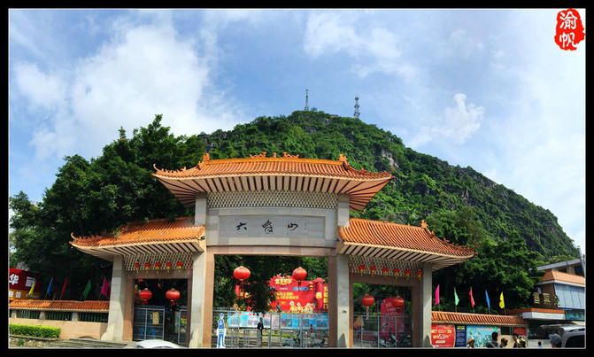
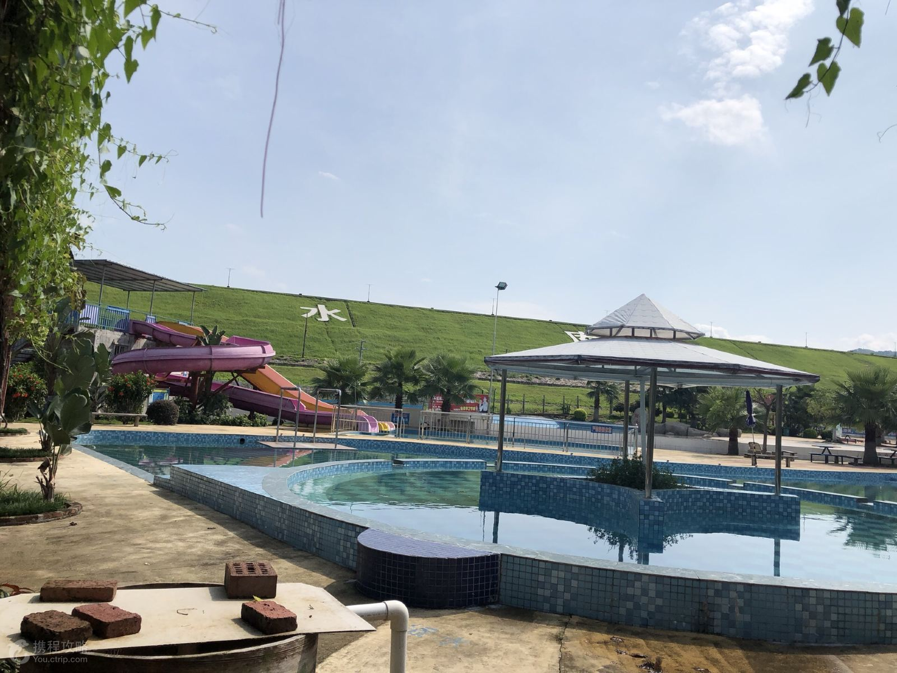
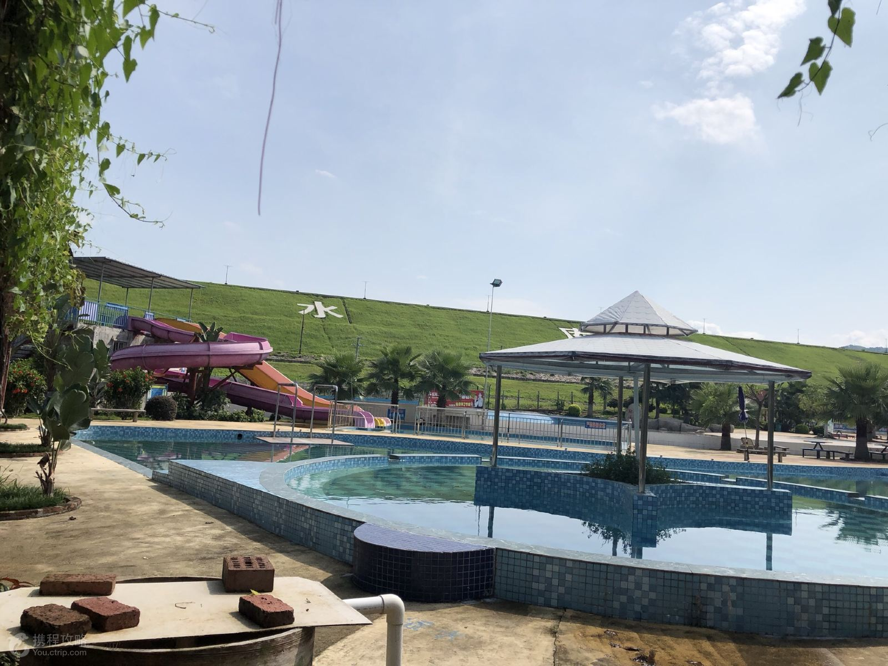
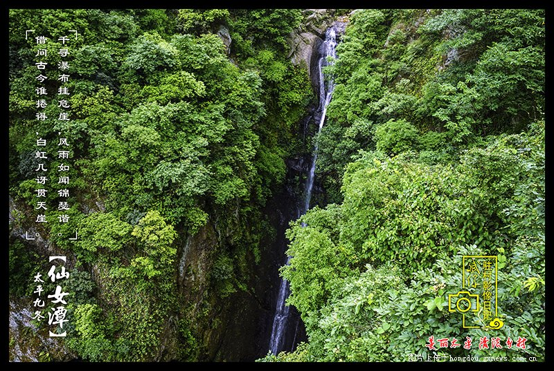
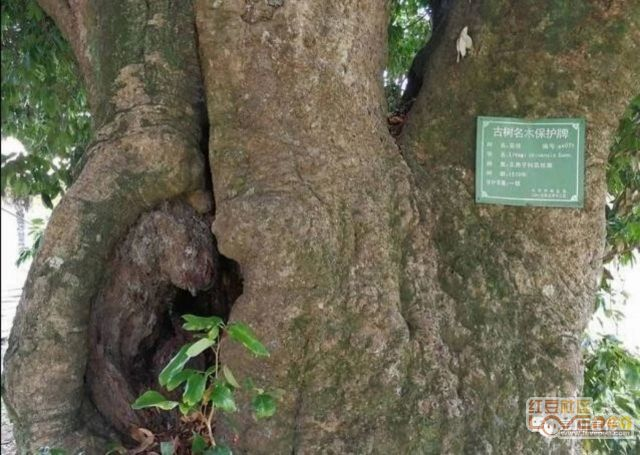
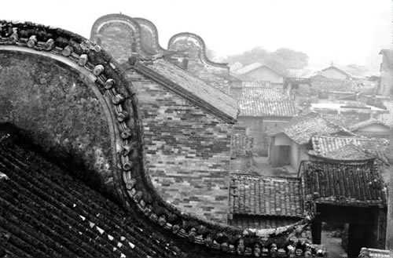
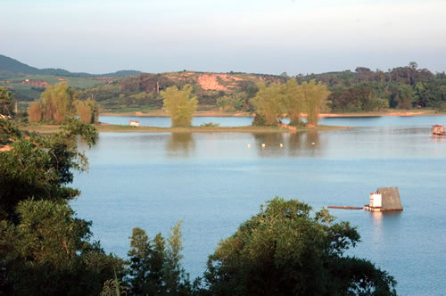

六峰山:
在灵山县城西侧。
海拔约180米，有龙头峰、凤尾峰、龟背峰、芙蓉峰、
冲霄峰、鹤立峰六峰。有诗曰;"一山国如药，跗萼环诸峰。峰峰削青黛，
簇簇金芙蓉。"山中有明正德间(1506-1521)建的北帝庙，清代建的六峰宝山牌坊。
黄华石室，传为明成化间(1465一1487)本县佛子乡狂木村黄华在此发奋读书10年，
终而有成，丁未年中榜，惜未廷试而卒，向为热心功名、好学之辈所凭吊。
六峰有摩崖碑刻30余方。北帝庙《西灵名山记》碑，清乾隆间(1736-1795)廉州知府康基因书，
字体刚劲，是灵山境内现存书法名碑。明嘉靖间(1522-1566)摹刻琅邪山吴道子观音像，
头戴凤帽，大面垂耳，交手于前，赤足踏浮云，序曰:"昔人评吴道子画人物，如从灯取影，
不差毫末。"
六峰山拔地横空，东西北三面悬崖峭壁，自古以来登览只有南麓"灵岩初地"一石径。
瘦石倚城留云，谷幽树古雾攒，古刹新亭两生辉，山花含笑向人迎。著名画家黄独峰
生前曾誉其有黄山风韵。宋朝至今，一直被视为"人寰胜地"。 六峰山景区内，溶洞景观不下百处，
历代人文景观也有50多处;六峰山是唐宋时期石六寨、宋朝灵山学宫的所在地;
花石山五彩瑰丽的灵山花石，明朝时曾定为贡品;翠壁峰穿镜岩内有抗日名将蔡廷锴当年"振旅岩疆"的遗墨，
特别是凤凰山根的三海岩素称"粤西胜景"。
大芦村：
1999年6月，大芦村被授予"广西楹联第一村"的荣誉称号。古宅内保存三百多幅明清时期创作、沿用至今的传世楹联。
这是一道古朴清新、琳琅满目的民俗文化风景，折射出古宅内的人历来重视耕读文化。
"宅绕青溪耸秀峰，松林鹤友晚烟笼。小楼掩路斜阳外，半亩方塘荔映红"。
大芦村位于广西钦州灵山县东郊8公里处，号称"荔枝村"，这里最值得一游的是有着丰厚历史文化底蕴的古文化住宅群，
大芦村劳氏古宅共有九个群落，分别建于明清两代。
大芦村民俗风情旅游区是广西三个著名古村(镇)之一，距离县城3.8公里，以古建筑、古文化、古树(俗称"三古")
名列广西三个古村镇之首，具有民宅建筑古老、文化内容丰富、
古树参天、生态环境良好这四个特点。大芦村古宅建筑面积达22万多平方米。
大芦村现保存有305副古对联，对联内容以修身、持家、创业、报国之特点，1999年经过广西民间协会评审，
被广西楹联学会和广西民间艺术协会授予"广西楹联第一村"称号。2005年大芦村被国家旅游局评为
"全国农业示范点"。2007年5月，再次被国家旅游局评为"第三批历史文化名村"。

广西烟霞山风景区
位于广西钦州市灵山县烟墩镇，其地貌是由红色砂岩构成（形成于6000万年前的河、湖中），
经过百千年的流水塑造形成巍峨独特的地形，地理学称为丹霞地貌。且发育典型、类型齐全、形态丰富、
具有雄、奇、秀、险、幽、奥、旷等特点，如神似老人脸庞的老子峰、阳刚奇特的擎天一柱、
秀丽雄伟的花龙岭等丹霞奇观。奇山亦有妙水，如流觞曲水般的银柳瀑布，柳暗花明的洞天瀑布，
潺潺如歌的梦蝶瀑布，无一不显丹霞生态景观之美。
烟霞山风景区自然生态动植物资源非常丰富，如野猪、猪仔狸、白鹭、豹猫等多种珍稀野生动物及野生石斛、
金银花、田七、灵芝草等多种名贵中草药植物；景区秉持着乡村与生态相结合的建设理念，
融入本土民俗文化特色，开展跳岭头、烟墩大鼓表演等非遗文化项目展示，设有民俗博物馆、
各类科普教育活动场地；配备野外烧烤、农家乐、荔枝等农作物采摘、野外露营、运动拓展、
动物逗趣等野趣项目。实属亲子游玩、野外拓展采风、乡村生态游玩休闲度假的上佳选择。
 

灵东水库
位于县城以东14公里处，主要以五六十年代建成的灵东水库蓄水而成的灵东湖为中心，
有“灵湖茜苑”、“天湖岛”等景点，这里碧波潋滟，水秀山色，大坝巍峨，小岛苍翠，
风景宜人，县以“灵东浴日” 一名入选为钦州八景之一，与六峰山风景名胜旅游区一同列入广西滨海旅游区。
在这里朝观日出、泛舟垂钓、游泳戏水、林中小憩，静看野鸭白鹤竞飞，喜闻渔歌晚唱，不失为一种美
这里建有“东湖阁”、“东湖度假村”等高级宾馆，旅游配套设备完备，确是一个观光避暑、
水上游乐的好去处。

仙女潭:
四面环山,背靠仙女岭,东是天堂岭,西是英雄山,崖壁陡峭,一道瀑布从五十多米高的悬崖上
飞流注入崖下潭中,莹珠四溅,汇成一泓澄澈见底的清泉,沿着怪石嶙峋的溪涧迂回流向山外。
每当盛夏,置身崖下,倚石憩息潭畔,让那随风浮游于身旁如烟如纱的雾珠抚弄,暑热与疲劳顿然消失,
因而潭畔岩石又有"无暑岩"之称,旧县志以"盛暑倚石而笙,严嚣顿消"而赞之。
"石磴横铺成坦道，山泉直泻挂层岩"，是仙女岩潭的真实写照。传说上古时期，在仙女岩洞里曾住着仙女,
洞里有石妆台,岩顶有一条石粱横悬。月明风清之夜,时闻笙笛之声,幽雅动听。自清雍正年以来,这里人居稠密,
鸡犬喧嚣,仙女们不愿再过这样的凡间生活,回天上去了。因此石粱自断,妆台自倾.故有"仙女岩"之名。
又传说:仙女岩景色奇丽,花香水秀。七月初七,众仙女外出游乐,路过此地,被深深的吸引而下凡嬉戏取乐,
时久忘返,直至天断其桥,逐化为戴耳环的大红鲤鱼,居于潭中,每年七月初七现回人形,翩翩起舞,
曾被路过此地的路人所见而广为传诵,并立"遇仙记"碑一块作记。

绿芦山:
“绿芦烟雨”是指灵山县檀圩镇附近的绿芦山，依托沙井的古建筑群及生态种植基地结合水库休闲旅游及登山旅游开发成综合旅游区绿芦山，
海拔590多米，位于灵山县檀圩镇，209国道过境，交通相当便利。在明朝以前就以“绿芦烟雨”入选灵山八景。山名的由来源于传说，
有说是昔人在斯山挖得绿色宝炉得名，也有说是山上多生芦荻，故名。据当地村民说，绿芦山又名六炉山。
传说古时候，天外飞来6只香炉，土著居民曾经在山顶挖出一只颜色如精金，且略带铜锈的香炉。
还有个民间故事说，从前有某财主家拥有家团万贯，却总不得安生，便密遣家丁将财宝运至此山，
分六个暗炉密藏之，于是“六炉山”由此得名。
绿芦山上多松树，少杂树，林木郁郁葱葱，四时云遮雾罩，春夏之交常见烟雨迷蒙。每当雨过天晴，白云缭绕，经久不散。
山腹曾有瀑布，飞溅击石化雾与云彩混合，一片朦胧，“绿芦烟雨”由此得名，列入灵山八景。传说山上有36处景点
如仙碑顶、野狸滩、马吊尿、仙桃麓、大小狮头、望海顶、南华石屋等。古人曾有诗赞叹绿芦山：
“插汉摩云景新怡，峰头微雨淡烟遮。凭高一笑乾坤老，芦荻苍苍石径斜。”
山下原是一天然大山塘，1985年扩建成天顶山水库。天顶山是南华山的俗称，位于绿芦山的西北。
这水库的风景丝毫不亚于灵东水库，甚至有过之无不及。湖中有两小岛，这一大一小的两个小岛让人想起了西湖的大小瀛州。
沿着湖边山路东去，走到水库的西尽头，那是山涧的出口，山泉就是从那流进水库里。一路过去全是成千上万年前滚落山下的巨石。
底下流躺着的就是清澈的山泉。现在专门弄了个水管把水引到山下饮用。到达山顶处，即出现云海奇观。
如此美妙的云海奇观是属于绿芦山的，那是大自然对她的恩赐！登至山顶，矗立在峰顶的一簇簇巨石令人油然而生“凭高一笑乾坤老”的豪气。
绿芦山能出多少树？一株树里能秘藏多少鸟鸣？一声鸟鸣能婉转倾泄多少天机？风欲止，而树愈摇。鸟鸣真是一种奇怪的音乐，
鸟愈叫，山愈幽深寂静。
烟雨是绿芦山的呼吸，是那么的香甜，沁人心脾。此时，绿芦山正在缓缓地舒畅地深呼吸。

千年古荔:
千年古荔地处广西灵山县新圩镇邓家村，品种为灵山香荔。该树树干最大周长6.15米，树高13.3米，树冠15米。
古荔长势茂盛，年年挂果，果实卵圆形，略扁，果皮深红色，核小，肉厚香甜爽脆有香气，品质上等。1963年，我国著名生物学家蒲蛰龙教授带领考察组前来考察，
认定树龄超过1460年（公元503年种植、距今树龄1502年以上），是目前我国仅存的树龄最长的“灵山香荔”母树，《灵山县志》、
《广东荔枝志》均有记载。1999年5月，被县人民政府列为第二批重点文物保护单位。
由灵山县农业局组织实施的《千年古荔保护》项目，在新圩镇政府、邓家村委会和县水果局的大力支持下，
近日全部完成建设任务并通过了验收。1500年树龄的古荔换发了新颜。
《千年古荔保护》项目建设了132平方米的古荔保护区，一是进行场地清理，树木修整防护，树木测量及保护规划等。
二是在树冠下建设三面光排水沟。；三是建设防护隔离栅栏。四是设立保护标志牌。五是区域道路填土，母树根系培土、旋放肥料等。
通过项目建设，既能有效地防止人为和家禽家畜的践踏损害，又为古荔提供良好的生长环境条件，使千年古荔更显勃勃生机，
为灵山香荔品种繁育及优良荔枝品种的研究提供保证，更为灵山“中国荔枝之乡”增添一道亮丽的风境线。

苏村:
天朝女杰苏三娘的故乡--苏村，位于灵山县石塘镇西面，现存明清建筑15个群落，建筑面积69万平方米，
分属苏、丁、刘、陈、杨、卢、张士物业，这些建筑中以刘氏祖居规模最大，由大夫第、司马第、鹾尹第、
二尹第、司训第、贡员楼和刘氏宗祠7个自成体系二翘檐相接的群落组成，建筑面积6000平方米，
属岭南风格建筑。苏村距镇政府2公里，辖一个自然村14个村民小组。全村总人口3578人，耕地面积2143亩，
其中水田面积1870亩。在这块仅有2平方公里的沃土上，有着悠久的历史文化和优美的传奇故事。
相传，该村于460多年前，苏氏家族先在此地落脚定居，故名曰苏村。此乃天朝女杰苏三娘的故乡。
苏三娘原姓杨，是一个江湖卖艺女子，打飞镖百发百中，与苏三相识后便情投意合，结为夫妻。
偶尔跟随苏三外出打仗，她善征勇战，智慧非凡，威风凛凛。她的丈夫苏三乃灵山天地会首领之一，
他组织了一支强大的农民起义队伍，专与清政府作对，口号是“劫富济贫，杀官放囚”，因此得到广大贫苦群众的支持。
苏三在道光三十年八月的一起战斗中，由于投机分子的出卖，被乱箭射死。随后，苏三娘率部加入太平天国，
在这次历史上最大的农民起义中留下了辉煌的一页。至今，乃被人们作为佳话传着。
此外，苏村还有一幢古老而独具特色的建筑群。它占地8000多平方米，七座大理石表砖、童子瓦结构的镬耳楼。
屋檐雕刻着莲花瓣，屋内有价值连城的石雕、石马、金鱼池等。栩栩如生、惟妙惟肖。
这便是苏村刘氏古建筑群，苏村境内的又一道靓丽的风景线。它建于清朝初年，至今已有400多年的历史。

邓阳湖农业生态旅游区:
位于伯劳镇东郊4公里处，距邓阳村委200米，东往武利镇10公里、灵山48公里、
浦北50多公里，西距钦州市60公里。钦（州）浦（北）二级公路沿湖而过，交通十分便利。
景区总面积160000平方米，其中水面面积90000平方米，群山环抱，湖周围的荔枝园、龙眼园、芒果园与绿竹丛相间相连；
外围青山叠嶂，榄树、苍松、古幛耸翠。湖面微澜，山青水秀。
景区内景点有自然景物依托民间传说的三姑仰泳、梳竹探春、梅林野渡、三凤求凰、鹊桥偶渡；与神话故事相关的五雷报春、雷神潜踪；七月流火、
学岭秋云、翠竹甘霖；还有浪漫醉人的情侣游船、鸳鸯戏水等等。
旅游区内按自然景象、历史遗迹、文化资源规划，设置有生态观光、探奇游览，野趣活动、眺望观赏、民俗风情、风味小吃、民间艺演、龙舟竞技、
水上游乐、情侣游船、鸳鸯戏水、烧烤野餐、垂钓休闲以及观景亭、陶艺馆、农家旅馆和停车场、休息棚等大小景区和活动场所，
融人文地理、特产特色于一体，汇旅游观光、怡情益智于一隅，动静相宜，超凡脱俗，畅游之后会令你乐不思归。
凄美的传说赋予了邓阳湖旅游区特有的文化品位，古往今来，绿树群山碧水，一如既往地润泽着这块美丽而富有神韵的地方，
让她如此精巧别致，风情万种。
泛舟湖中，游人与湖光山色相映成趣，渔舟弄清影，情寄山水间,让人霎时感觉时间的凝滞。清晨，云雾缥缈，
熏风送爽，润湿游人憔悴的肌肤。日暮，湖光潋滟，渔舟唱晚，引燃游人无边的遐想。